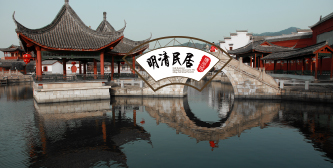
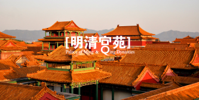

-

秦王宫
秦王宫景区是横店影视城第二个建造起来的景区，根据秦朝咸阳宫1号宫遗址仿建而成。景区占地面积800亩，再现了秦王宫的建筑特色，"四海归一殿"高达44.8米，纵深达600米，气势磅礴、雄壮粗犷 秦王宫景区拍摄过的影视剧有：《荆轲刺秦王》、《英雄》、《无极》、《汉武大帝》、《寻秦记》、《木乃伊3》。
-

清明上河图
清明上河图景区真实还原了北宋画家张择端的千古名画《清明上河图》。景区占地面积600余亩，风光旖旎、更有亭台楼阁、轩廊水榭装点其中，再现了北宋汴京城的社会风貌、风土人情，真正是"一朝步入画中，仿佛梦回千年"。清明上河图景区拍摄过的影视剧有：《小李飞刀》、《绝代双娇》、《飞天舞》等。
-

明清宫苑
明清宫苑景区以北京故宫1：1比例而建，占地约1500亩，荟萃了京城宫殿、皇家园林、王府衙门、胡同民宅等古建精华，再现了京都风貌。主体建筑有太和殿、乾清门广场、乾清宫、坤宁宫、淑芳斋、承天门、午门、养心殿、军机处等。明清宫苑景区拍摄过的影视剧有：《金枝欲孽》《满城尽带黄金甲》《宫》《步步惊心》《后宫甄嬛传》等。